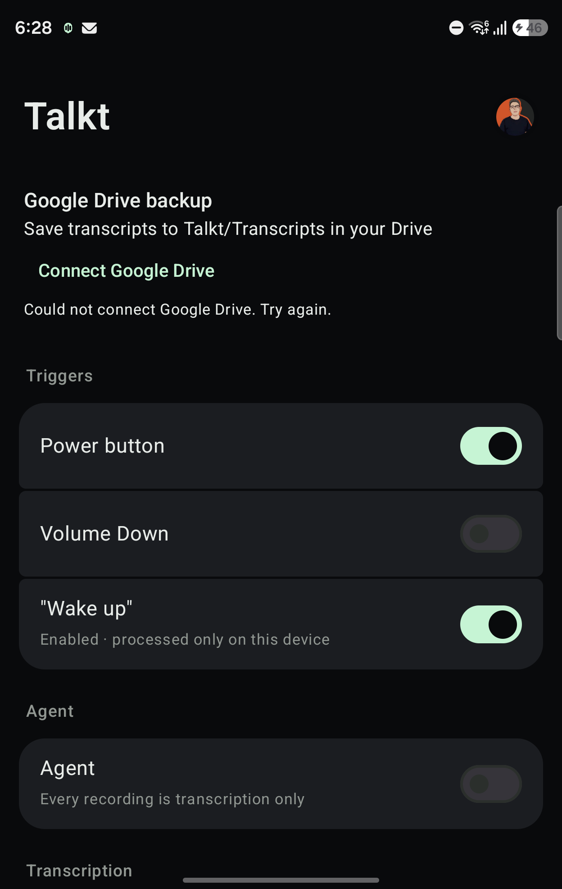

Talkt Google Drive backup
The final build is installed on the Fold, and Talkt sign-in works. Google Drive authorization returns status 8 after account selection. Backup remains disconnected; no transcripts were uploaded.
| Check | Result |
|---|
| JVM tests | 56 passed, including 12 new Drive tests. |
| Debug APK | Build passed. |
| Installation and UI | Installed on Fold R3GL708X7KJ. Text contrast corrected and visually verified. Screenshot and CAP recording captured. |
| Google Cloud | No Talkt project found. Automatic approval review rejected creation of buddytools-talkt. |
| Google authorization | Talkt sign-in passed. Drive account selection returns Google Play services status 8. |
| Real Drive upload | Not yet verified. |
What changed
Users can connect Google Drive from Talkt's home screen and choose whether to include existing transcripts. New transcripts and agent replies upload as Markdown files to Talkt/Transcripts. WorkManager waits for connectivity and retries interrupted uploads.
The app saves Google's file IDs before uploading, so retries reuse the same ID. Settings and upload records are separated by Talkt account and Google Drive account. Requests check that the account and connection are still active.
Drive tokens stay out of Talkt's stored preferences and backend. Disconnect stops future uploads on this device and leaves existing Drive files. Local deletions do not delete backups. Restore and cross-device sync are outside this change.
The device check also fixed an error handler that treated all unsuccessful authorization results as cancellations. Google errors are now parsed and distinguished from cancellation.

Next checks
Approve the dedicated Google project, enable Drive, and register the Android OAuth client. Resolve Google authorization, then verify one synthetic transcript plus offline retry, sign-out, account switching, and disconnect.
Implementation details and Google setup